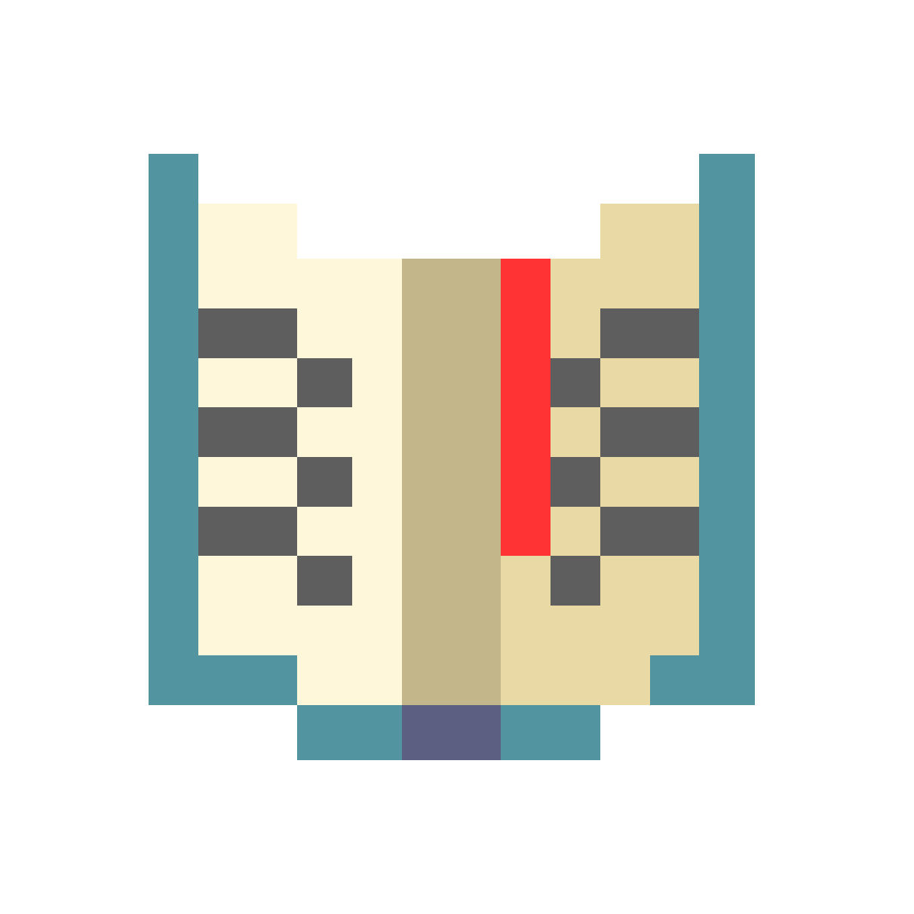

Vitor Belluzzo
Desenvolvedor FrontEnd Júnior
- 
-

Sobre
Olá, meu nome é Vitor Belluzzo, seja bem-vindo(a)!
Descobri minha afinidade pela programação aos 12 anos quando quebrava a
cabeça para montar servidores para eu e meus amigos jogarmos minecraft.
Sempre tive o sonho de ser um desenvolvedor e atualmente, no inicio do ano de 2022, além de ingressar
no curso
de Análise e Desenvolvimento de Sistemas, comecei a colocar esse sonho
em prática estudando as ferramentas fundamentais para o front-end, sendo elas HTML,
CSS e JavaScript e React.
Clicando no coração acima, você terá acesso ao meu currículo, LinkedIn, e ao meu perfil no GitHub que hospeda meus projetos pessoais.